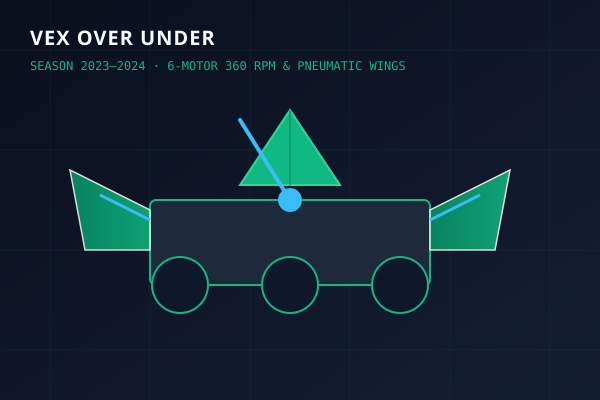
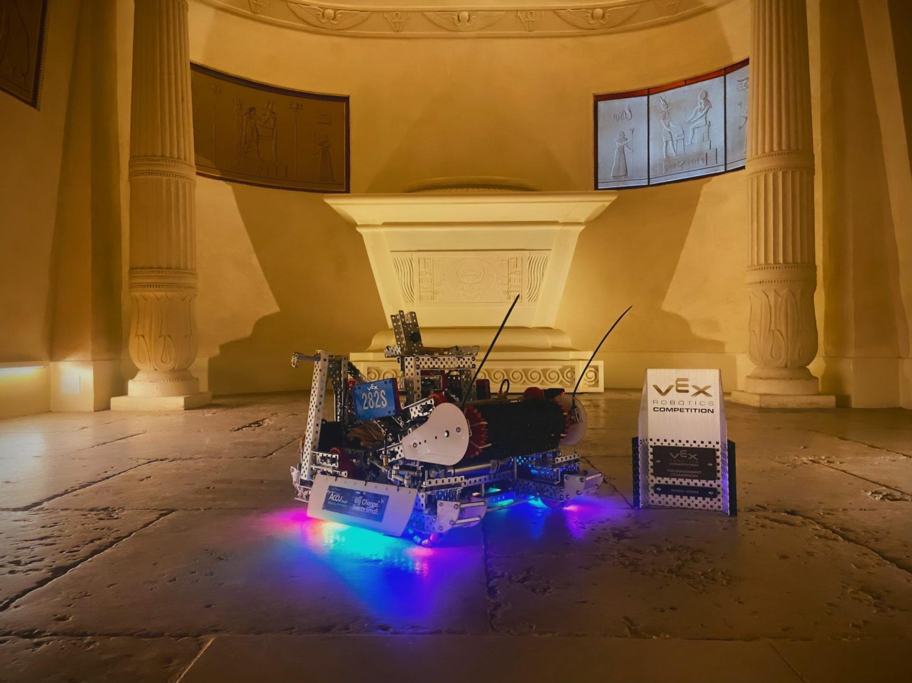

Pneumatic Power Take-Off & 3ft Elevation Climb
To bypass strict 8-motor constraints while demanding both maximum drivetrain pushing power and massive lifting torque, engineered a pneumatic power take-off (PTO) transmission.
Under normal match driving, all 6 brushless DC motors power a 360 RPM high-speed omni chassis. In endgame, pneumatic cylinders shift the gear cluster, routing all 6 motors directly to a high-torque spool winch paired with an elastically tensioned, pneumatically deployed latching arm to elevate the robot 3ft.
ENGINEERING HIGHLIGHTS
- 6-Motor Dual-State PTO: Seamless pneumatic shifting between high-speed drivetrain and high-torque climbing winch.
- 3ft Elevation Latch Arm: Elastically tensioned carbon/aluminum arm with positive mechanical locking.
- Pneumatic Wings: CNC Lexan wings actuated via SMC cylinders, doubling effective pushing width.
- Low-Profile Chassis: Sub-12" clearance to traverse central steel barriers at full match speed.
Design Evolution: Motorized 4-Bar, Elastic PTO & Worlds Winch Rebuild
Over Under involved three distinct mechanical iterations as we balanced motor allocation, pushing authority, and endgame elevation speed.
Switched from early pneumatics to a motorized 4-bar linkage lift. Because of the strict 8-motor ceiling, drivetrain power had to be throttled back from 6 motors to 4 motors to allocate 2 motors specifically for lift actuation.

- Loss of Drivetrain Dominance: 4-motor drivetrain lacked pushing torque against 6-motor opposition during critical goal scrums.
- Dead-Weight Motors: The 2 lift motors sat idle for 90% of the match time until endgame.
- Climb Speed Limit: 2 motors provided insufficient power to perform high-tier elevation rapidly under match time limits.
- Prototyped a mechanical rubber-banded PTO system to dynamically transfer stored elastic energy to the lift when raised.
- Proved the concept of stored mechanical energy but had tooth engagement reliability issues under heavy vibration.
Comprehensive chassis and transmission overhaul: engineered a pneumatic sliding-spline PTO shifting all 6 drive motors to a central high-torque elevation spool winch in under 0.1s, paired with an elastically deployed latching arm.

- Pneumatic Sliding Spline PTO: Disengages wheels and couples all 6 brushless motors to the central winch spool in < 0.1s.
- Elastically Tensioned Latch Arm: Carbon/aluminum arm pre-tensioned with surgical tubing, latching positively onto elevation bars.
- Full 6-Motor Drive Restored: 360 RPM omni drivetrain delivering 66W of pushing power with aluminum heat sinking.
- Drivetrain Power: +50% increase (4 motors → 6 motors).
- Climb Height: Elevated full 3ft with 100% mechanical latch hold.
- Climb Speed: Completed full 3ft climb in 1.4 seconds.
- Accolade: Multiple Tournament Champion titles and Worlds qualification.